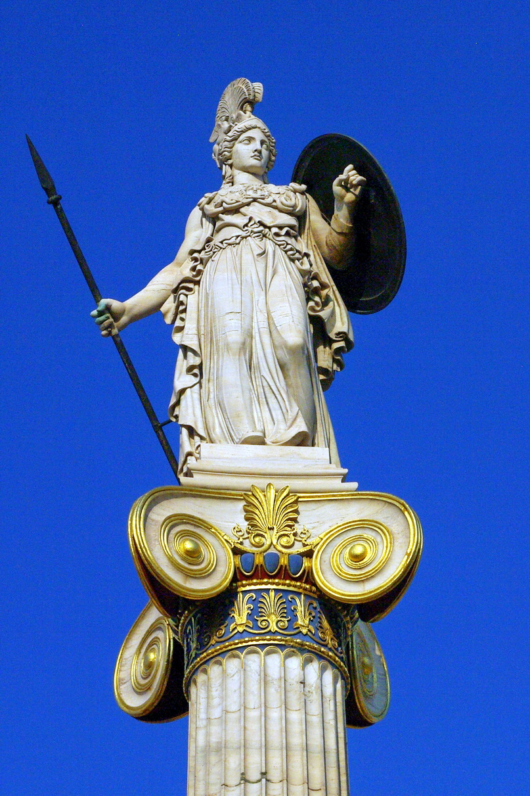

Афина Паллада (Παλλὰς Ἀθηνᾶ)

В древнегреческой мифологии богиня мудрости, военной стратегии и тактики, одна из наиболее почитаемых богинь Древней Греции, включавшаяся в число двенадцати великих олимпийских богов, эпоним города Афины. Кроме того, богиня знаний, искусств и ремёсел; дева-воительница, покровительница городов и государств, наук и мастерства, ума, сноровки, изобретательности.
Облик Афины

Афина легко отличима от других древнегреческих богинь благодаря своей необычной внешности. В отличие от других женских божеств, она использует мужские атрибуты — одета в доспехи, держит в руках копьё; её также сопровождают священные животные.
- шлем (как правило, коринфский — с высоким гребнем)
- эгида (щит), обтянутая козьей шкурой и украшенная головой Горгоны Медузы
- появлялась в сопровождении крылатой богини Ники
- олива — священное дерево древних греков
- сова (символ мудрости)
Родители
- Мать
- Океанида Метида, богиня мудрости — от Зевса
- По аттической версии, дочь Геллении — от Зевса.
- Нимфа реки Тритон (в случае отцовства Посейдона)
- Отец
- Зевс. Проглотив беременную Метиду и породив Афину из своего расколотого черепа, он присваивает черты матери-родительницы, произведя дочь на свет единолично.
- Посейдон. По Геродоту, Афина затем отказалась от такого отцовства и перешла к Зевсу, который принял её как дочь.
- Циклоп Бронт («гром»), породивший её от Метиды.
- Гигант Паллант, с которого она в других вариантах снимает кожу.
- Смертный человек по имени Итон, царь города Итон во Фтиотиде.
Источник